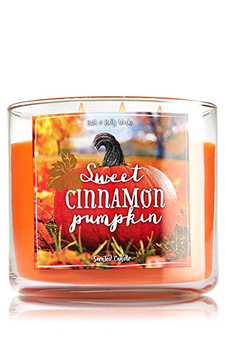
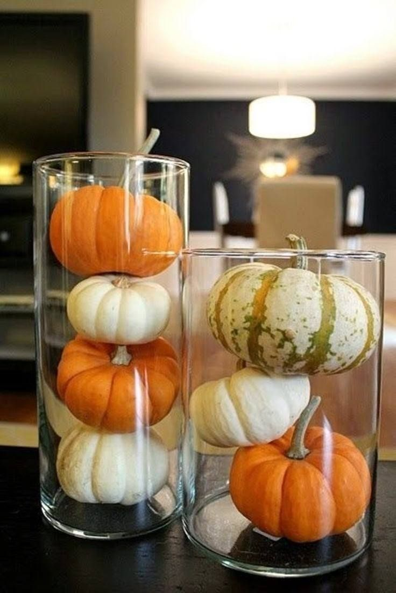
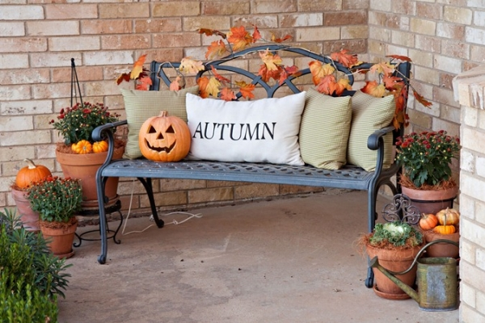
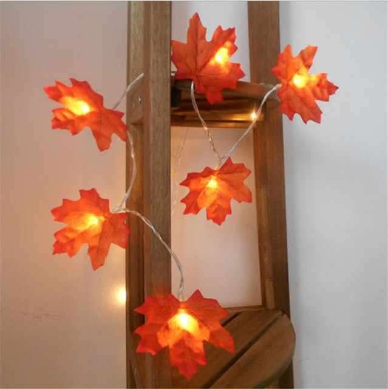
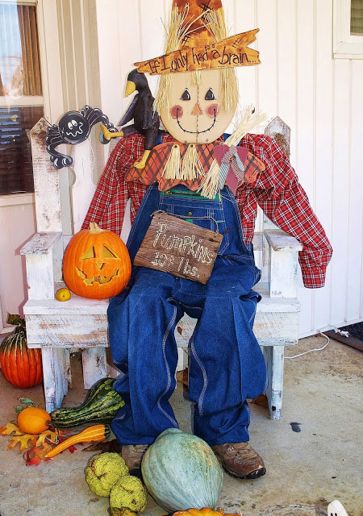

Bringing Fall to your home decor creates a festive and comfy feel for the season. There are ways to decorate both the interior and exterior of your home. Mums (the perfect fall flower), wreaths, pumpkin carvings, scare crows, fake pumpkings, throw pillows, dainty lighting, and candles are all items that can be used to decorate for fall. Below are picuters for inspiration, but it's up to you to be creative! How will you decorate your house?!
    Stores such as TJ Maxx, Marshalls, and Hobby Lobby are great places to shop for home decor at reasonable prices. If you stop into Hobby Lobby, go online first and get a 40% off cupon!
Hobby Lobby Cupon